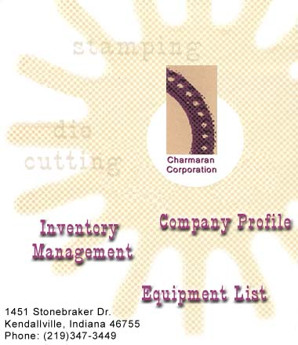

Company Profile Expansion in 1991 added two distinct product lines. One line manufactures precision roll formed motor mounting rings for appliance motors; the other produces locking devices for fiber drum containers. |
 |
The metal rings increased product offerings to the appliances market and the locking devices offered new opportunity in the fiber drum market. Capitalizing on K & L’s reputation
for excellence, Charmaran added larger tonnage presses and additional plant capacity.
Specialized services were also added to make Charmaran one-stop stamping house. These
include product engineering, tool and die design capabilities, prototypes, steel rule die
cutting and value added secondary operations requiring welding and riveting and material
specification and selection. With more than 1,000 stock die sets Charmaran also has the
capability to offer material stocking programs for J.I.I vendors. At Charmaran, no run is
too small or too large. We process orders form as few as 50 pieces to runs over a million
pieces. Whatever the size of your order, you can depend on Charmaran to produce custom
stampings quickly, efficiently and competitively. |
Contact
Charamaran Today
1451 Stonebaker Drive
Kendallville, Indiana 46755
Phone: (219) 347-3325
Fax: (219) 347-34490
Home | Company Profile | Inventory Management | Equipment List